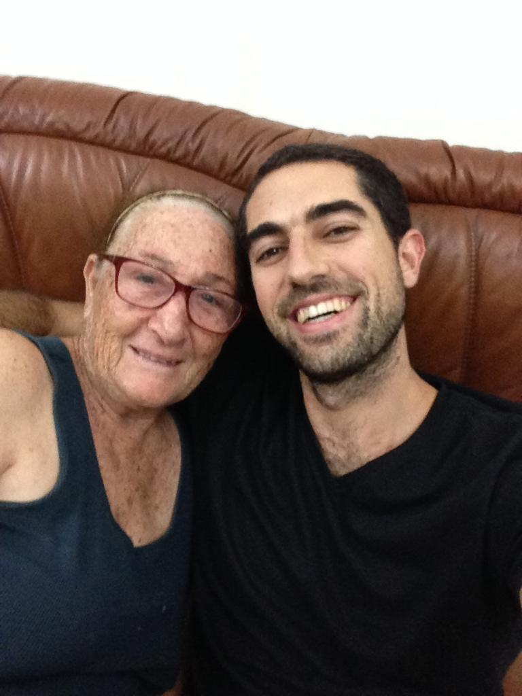
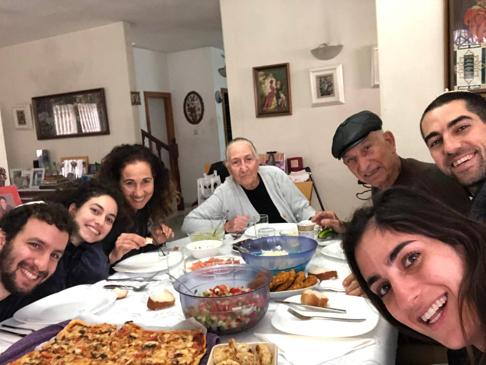
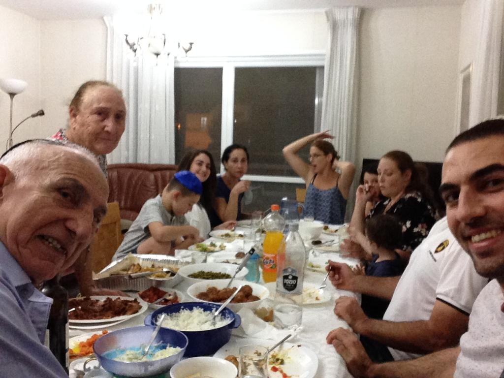

My Photos




My name is Shoshana Ben-Zaken and I'm 77 years old. I came to Israel in 1948 from Marseille in France To Atlit. My dad was draughted to take part in The Independence War and we lived with other Israel newcomers. I learned in Rashi school in Tel-Aviv and then I went to a professional school. I met my husband - Shimon at the age of 17 and we got married one year after. We built a house together and had 2 children. In Yom Kippur War, Shimon was called and got injured while I was on my third pregnancy at home. I worked in Mizrahi Bank for 35 years until retirment. I have 3 children, 9 grandchildren and 2 great grandchildren. In my spare time I like sewing and knitting. I also make Goblen pictures and Découpage arts. Now we are staying at home and wating for the quarantine to pass so we could go to our regular vacation to the Dead Sea.
Three main differences between web1, web2 and web3:
The differences of searching the query: "side effect of medicines"